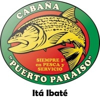
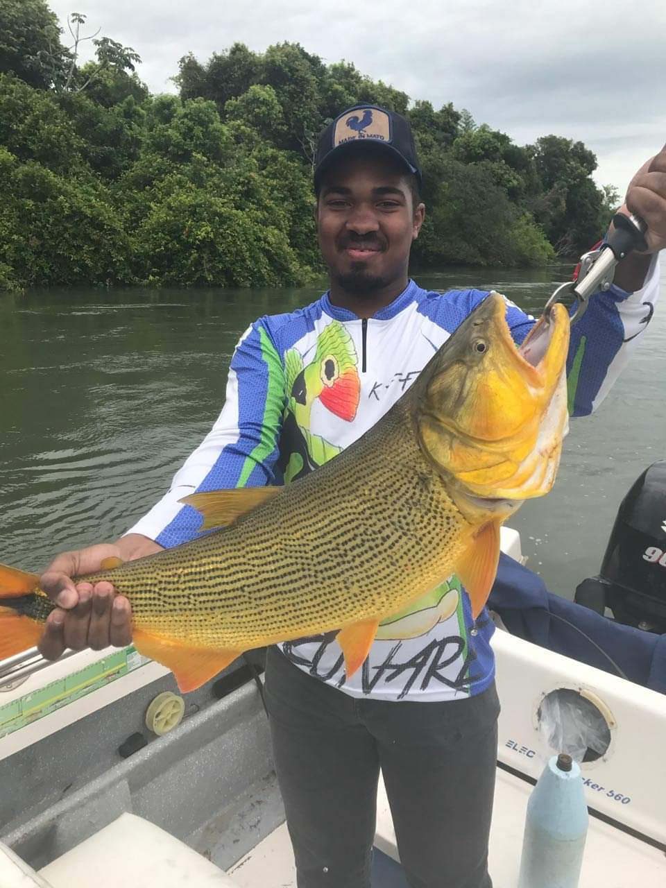

Minha primeira pescaria oficial foi na Argentina,mais específicamente em Itá-Ibaté na provincia de Corrientes, não é normal um pescador começar por lá, mas tive a sorte de poder escolher um dos destinos mais desejados como o meu primeiro.
Descrevendo um pouco melhor a região, ela é considerada o "Pantanal" argentino, uma região chama Entre Ríos, justamente por estar entre e no encontro dos rios Paraná e Paraguai. É uma região de fronteira entre a Argentina e o Paraguai, sendo o rio Paraná a barreira entre os dois países.
Se situa em uma área de vegetação mista entre mata densa e plantas forrageiras. É uma parte muito quente da Argentina, durante o verão de Corrientes as temperaturas se igualam as brasileiras e podem até superar em alguns dias, mas no inverno dificilmente passam dos 7 ou 8 gruas nos dias mais quentes.
A Cabaña Puerto Paraíso, é um dos melhores operadores de pesca da Argentina. Com a infraestrutura simples em comparação com os operadores vizinhos você pode se sentir um pouco enganado, mas a sensação só dura até o momento em que você é recebido e atendido como se fossem amigos de longa data, e obviamente até a primeira de muitas fisgasdas.
Sim, mesmo sem eu ser fluente em espanhol, pelo menos na época, a equipe da pousada conseguiu me fazer sentir como se estivesse na casa de um bom amigo, comendo e bebendo bem e, principalmente, comemorando muito cada peixe que subia.
Meu guia, Pití, fez o possível e o impossível para que eu e meu meio-irmão conseguíssemos nos encontrar com O Rei do rio, o Dourado.
Talvez o único ponto realmente muito baixo, quase inaceitável, fosse o arroz que não tinha condições de ser comido... Mas isso não é necessariamente um problema já que o arroz não é um prato típico ou comum para os "hermanos", então é difícil achar arroz bem feito em qualquer parte da Argentina.

Agora, falando sobre o que realmente interessa, na minha opinião, eu não tinha como ter uma primeira experiência melhor!
Na verdade o pacote inclui duas pescarias em uma, usando técnicas variadas e mais de uma modalidade, é um "Leve 2, pague 1" onde você começa com uma pescaria de iscas-vivas que suprem um determinado período do dia, e depois usa essas iscas alternadamente com plugs de profundidades que vão até uns 15 metros ou 17 metros.
É sempre uma boa ideia seguir a recomendação do guia, afinal ele mora na região e pesca todos os dias, mas caso queira decidir por conta própria pode escolher o corrico onde são empregadas a iscas artificiais (plugs) de fundo, ou pescar usando os plugs de superfície e as iscas vivas enquanto está "apoitado" com o barco preso por uma âncora ou em uma poita no meio do rio
Também é possível pescar de "rodada", onde o guia sobe o rio e depois deixa o barco descer empurrado somente pela correnteza, nessa modalidade de pesca é possível usar plugs de superfície e as iscas vivas cedidas pela pousada ou as pescadas no começo do dia.
Lá, dentre as dezenas de espécies, duas são o verdadeiro motivo de ansiedade e euforia, o Dourado, já apresentado acima e, o Surubim-Pintado. O Rei chegando até os seus 20 Kg nos exemplares femininos da espécie e, o monstro dos fundos, o Surubim, podendo passar dos 80 Kg de puro músculo.
Eu não tive o prazer, ou desprazer, de fisgar um surubim durante a estadia na pousada, porém consegui 3 exemplares masculinos do Dourado que variavam de 6 à 8 quilos. Fico imaginando qual deve ser a sensação de brigar e conseguir puxar um surubim, dentre todas as brigas que já vi nenhuma levou menos de 45 minutos de dor, medo e sofrimento por parte do pescador e esforço hercúleo do peixe para se soltar com a ajuda da correnteza e de uma coluna d'água que varia de 9 à 20 metros altura.
Não se engane, apesar de parecer exagero meu, um surubim adulto e completo pode rebocar uma lancha de até 21 pés contra a correnteza do rio , pode ser perigoso encarar um peixe desses.
Mas enfim, quem faz uma "expedição" e ainda liga pro risco?! Hahahahahahahaha
Se ele acabar em uma bela foto na galeria do seu celular e nos dos amigos, além da sua memória, então, valeu a pena todo o risco de afogamento, desidratação e de quebrar algum osso.
Já o dourado, apesar de não representar ou tanto risco, ou os mesmo tipos de risco, também representa alguns consideráveis como cortes infeccionados ou amputação de dedos enquanto você está no meio do nada, à cerca de 160 Km do hospital descente mais próximo. Os impressionantes saltos, a velocidade e as brigas que eles proporcionam, dignos de filmes, fazem valor esses riscos também.
Captura e Embarque
O vídeo ao lado mostra o final da briga e o momento em que o dourado da foto anterior foi embarcado. Essa briga durou aproximadamente 30 minutos com um peixe médio para a espécie, de quase 8,5 Kg, e foi impossível qualquer tentativa de comemorar com os braços por eles estarem queimando pelo esforço e repetição dos movimento da carretilha.
Equipamento e Guia
O conjunto usado foi, uma carretilha Marine Sports Fierro 400, uma vara Okuma 25~45 lbs., linha Marine Sports Vexter x8 com 0.31mm, leader Vexter de fluorocarbon com 0,60mm, encastoador de aço carbono revestido com malha de nylon, isca artificial de profundidade com aproximadamente uns 13 cm e a barbela extra-longa para atingir a faixa de 15 metros de profundidade ou mais.
A embarcação da pousada era uma lancha de 17 pés, se não me falha a memória, 5 lugares, com um viveiro não aerado, motor polpa com 90 HP e 40 litros de combustível por dia e um cooler para as bebidas e aperitivos que sempre acabam virando isca para espécies menores.
Nosso guia era o Pití, ele não quis contar o ótimo motivo do apelido, mas isso não nos impediu de nos divertirmos muito. Como era minha primeira pescaria de verdade foi preciso um intensivo com hands-on para dar certo, e o Pití foi um ótimo professor de nós, ajuste das carretilhas e balanceamento do equipamento, análise da situação do ponto de pesca, sensibilidade para saber o momento e o jeito certos de fisgar, comportamento das espécies da região quando são pegas, enfim, aprendi muitas coisas, coisas que foram muito úteis e importantes na pescaria da próxima seção e nas pescarias feitas no intervalo entre a Argentina e a próxima.